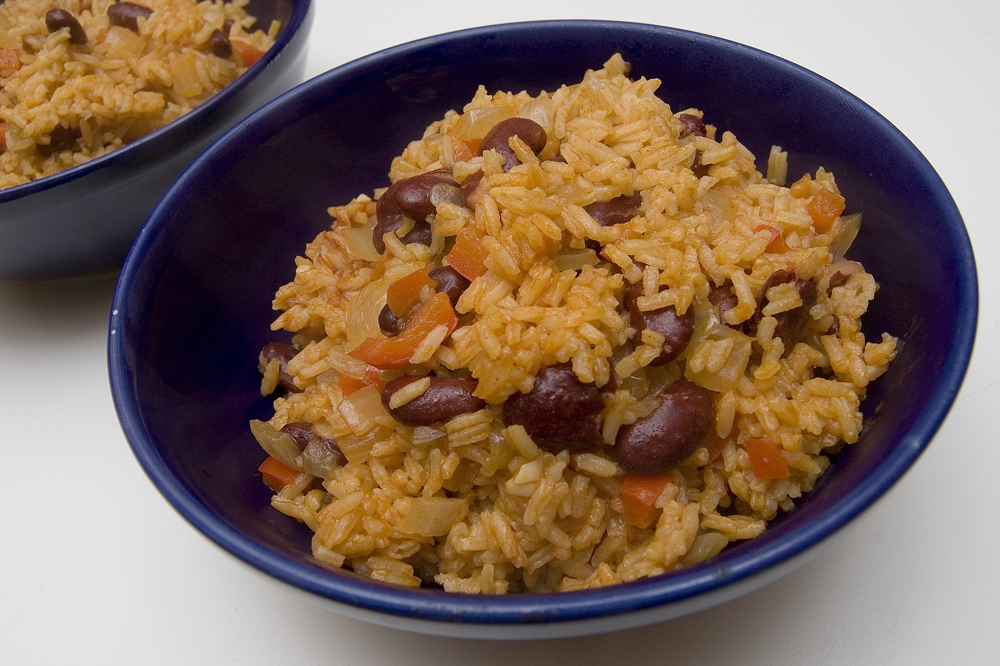

Rice and Beans

Description
Delicious rice mixed with creamp beans and spices. Tomato and paprika add that firey glow.
Don't you wish your girlfriend was hot like me? If you eat too much you'll get gas.
Ingredients
- Rice
- Beans
- Canned Tomato
- Smoked Paprika
- Veggie Stock
- Garlic
- Wash your rice and add to pot.
- Drain and rince beans and add to pot.
- Add your canned tomato,garlic, and paprika to the pot.
- Add your veggie stock and bring to a boil before lowering temperature and putting on the lid.
- Let boil for 15 minutes and then leave off heat with lid on for 10 min. Enjoy!
Home